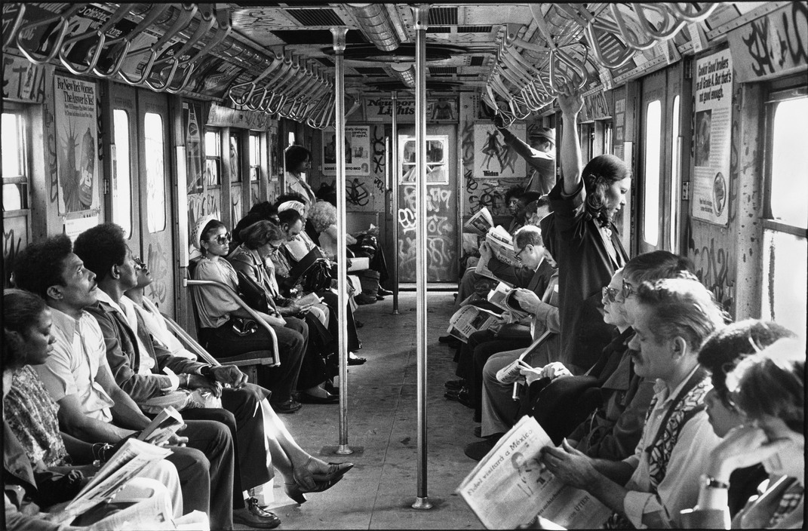

Times Square, 1982.
“Abuse of power comes as no surprise.”
Times Square, 1982.
“Abuse of power comes as no surprise.”


Vintage photographs captured ‘Human Fly’ George Willig climbing the World Trade Center in 1977.
Coney Island, 1960
Stylin’
Here’s the Gapstow Bridge in Central Park, first in 1944, next in 2006. Completely wrong eras, but the best I could find.Â
I’ll keep my eye out, but I don’t have any right now…

New York, 1970s

A young lady, seemingly transfixed by the architecture in New York. From mybelair62, 1950s.

USA. New York City. 1980. IRT 2.
© Danny Lyon/Magnum Photos

5th Ave and 14th St, 1970
Roberta Bayley  David Johansen of the New York Dolls on the Subway, New York City  1978
“Sometimes when I hear my voice on tape, I’m like, ‘Who is that horrible man?‘†David Johansen


Early bombing

Botanica El Congo Real, Park Avenue at 110th Street, Spanish Harlem, New York City, 1974.

E. 48th St, 1979

NYPL 1979

Bonwit Teller, 1977

Park Slope 1988

Park Slope, 1988